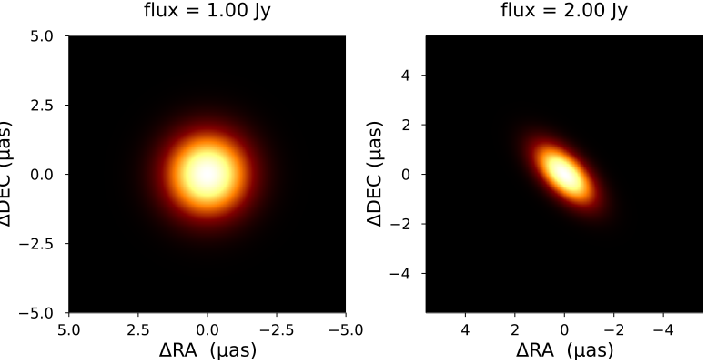
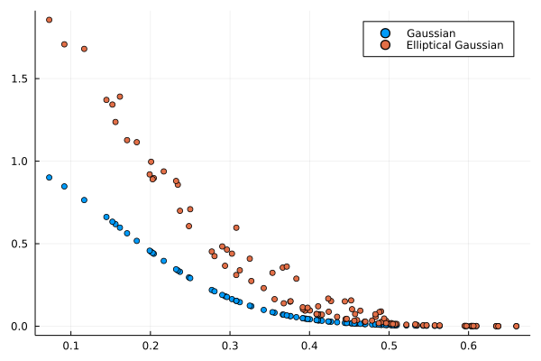

Model Interface
Defining the Model
VLBISkyModels aims to be more modular and extensible than previous VLBI modeling packages. Namely, simple models are composed to construct complicated source morphologies instead of making many different models. This is accomplished with a type and trait-based hierarchy.
Additionally, ComradeBase is a low-dependency version of this package that defines this type and trait hierarchy that users can more easily incorporate into their packages.
To see how this works, we will go through a simplified implementation of the Gaussian model in VLBISkyModels. The Gaussian model is a simple, compact emission structure model that can constrain the typical characteristic size of an image feature from VLBI data. To construct a Gaussian model, we will first define a struct:
struct MyGaussian{T} <: VLBISkyModels.AbstractModel
size::T
endwhere size is the standard deviation of the gaussian.
We typically do not include a size field in the model because a generic size can be specified with the modify function. However, for the sake of this example, we will include it, since it will highlight how to make models frequency dependent.
To specify the model we need to tell VLBISkyModels how we will represent the model in the image and visibility domain. For a Gaussian, both the image and visibilty domain are analytic. These are specified with the traits ComradeBase.visanalytic and ComradeBase.imanalytic:
# Fourier and image domains are analytic
ComradeBase.visanalytic(::Type{<:MyGaussian}) = IsAnalytic()
ComradeBase.imanalytic(::Type{<:MyGaussian}) = IsAnalytic()Finally, we can specify if the model is intrinsically polarized by using the IsPolarized and NotPolarized() trait
VLBISkyModels.ispolarized(::Type{<:MyGaussian}) = NotPolarized()The actual implementation defines the Gaussian to be a subtype of VLBISkyModels.GeometricModel, which automatically defines these methods. However, for models that aren't a subtype of GeometricModel, we assume the image domain IsAnalytic() and the Fourier domain is NotAnalytic().
Since both the image and visibility domain representation of the Gaussian are analytic, we need to define an intensity_point and visibility_point method.
function ComradeBase.intensity_point(m::MyGaussian, p)
(; X, Y) = p
@unpack_params size = m(p)
return exp(-(X^2 + Y^2) * inv(2 * size^2)) * inv(2π * size)
end
function ComradeBase.visibility_point(m::MyGaussian, p) where {T}
@unpack_params size = m(p)
return exp(-2π^2 * size^2 * (u^2 + v^2)) + 0im
endNote that as of 0.6.6 we recommend retrieving the parameters of the model m using either getparam or the convience macro @unpack_params. This is because the parameters of the model may not be simple numbers but functions of time and frequency. Finally, not that @unpack_params is a macro that reduces boiler plate and is equivalent to,
size = getparam(m, :size, p) # identical to @unpack_params size = m(p)Additionally, most models in VLBISkyModels has two additional functions one can implement if possible:
flux(m::MyGaussian): This defines the flux of a model. If this isn't defined, the model won't have a flux until an image is created. For a Gaussian, the definition isflux(::MyGaussian) = 1.0.radialextent(::MyGaussian): This defines the model's default radial extent. For a Gaussian, we will consider the radial extent to be $5σ$, soradialextent(m::MyGaussian) = 5.0*m.size. Although note that for a frequency dependent Gaussian this will not work correctly.
This completely defines the model interface for VLBISkyModels. With this, you can call the usual user API to evaluate, fit, and plot the model. Additionally, we can start talking about adding multiple Gaussians and modifying them. For instance, with a flux of 2 Jy. This can be created by VLBISkyModels as follows:
using Plots
gauss = 2.0 * MyGaussian(1.0)
fig = plot(gauss; layout=(1, 2), size=(800, 300))
plot!(fig[2], ellgauss; size=(800, 350))
using Plots
u = rand(100) * 0.5;
v = rand(100) * 0.5;
vg = visibilitymap(gauss, u, v)
veg = visibilitymap(ellgauss, u, v)
Plots.scatter(hypot.(u, v), abs.(vg); label="Gaussian")
Plots.scatter!(hypot.(u, v), abs.(veg); label="Elliptical Gaussian")
Making the model frequency dependent
To make the model frequency dependent we can use the existing VLBISkyModels.DomainParams interface. This defines how the model parameters behave as a function of frequency and time. For example, to make the size of the Gaussian frequency dependent we can use the TaylorSpectral type
ν₀ = 230e9
σ₀ = 1.0
a = 1.0
size = TaylorSpectral(σ₀, a, ν₀)
gauss = MyGaussian(size)
ellgauss = 2.0 * MyGaussian(size)which will make a Gaussian whose size as a function of frequency is given by
\[\sigma(\nu) = \sigma_0 (\nu / \nu_0)^a\]
If we wanted a different function form for the frequency dependence, we can define a new type
struct MyFreq{T,F} <: VLBISkyModels.DomainParams
a::T
F0::F
endwhich only requires a single method to be defined for it to work
function VLBISkyModels.build_param(param::MyFreq, p)
return param.a + p.Fr / p.F0
endwhich says that the depends changes as a function of frequency linearly with a slope of F0 and a intercept of a. This can be used as follows
ν₀ = 230e9
σ₀ = 1.0
size = MyFreq(1.0, ν₀)
gauss = MyGaussian(size)This extension of the model to be time and frequency dependent is only necessary for models that aren't intrinsically dependent on time and frequency. For a model, that has some prescribed time and frequency dependence, the model should be defined explicitly in intensity_point/visibility_point if they are analytic in the image/visibility domain respectively.